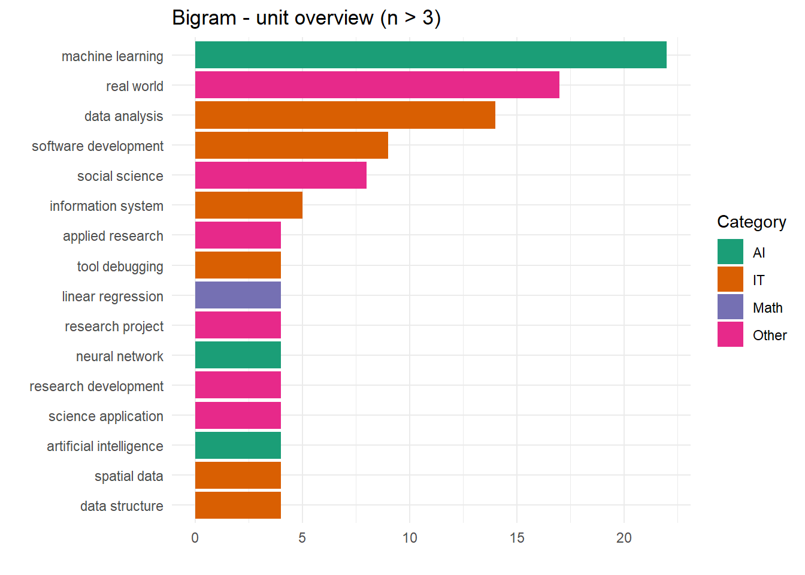
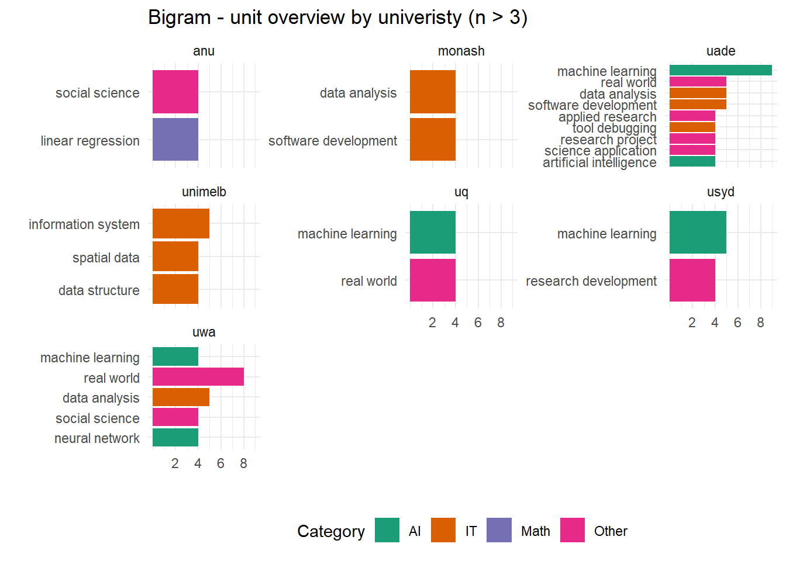
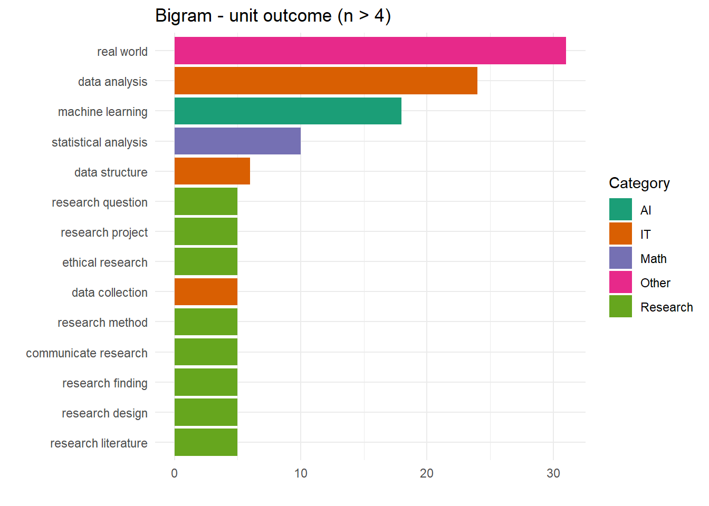
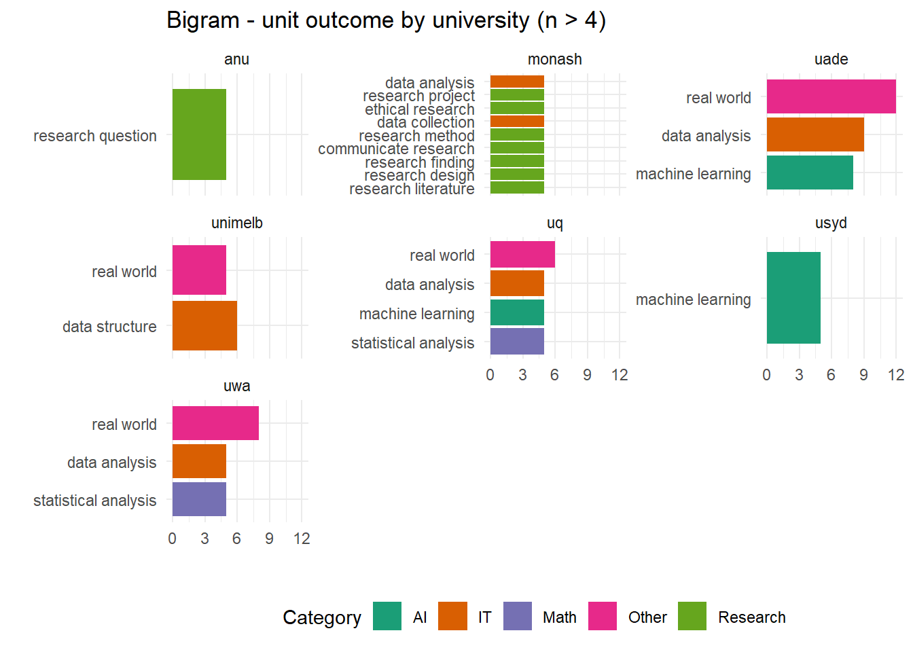
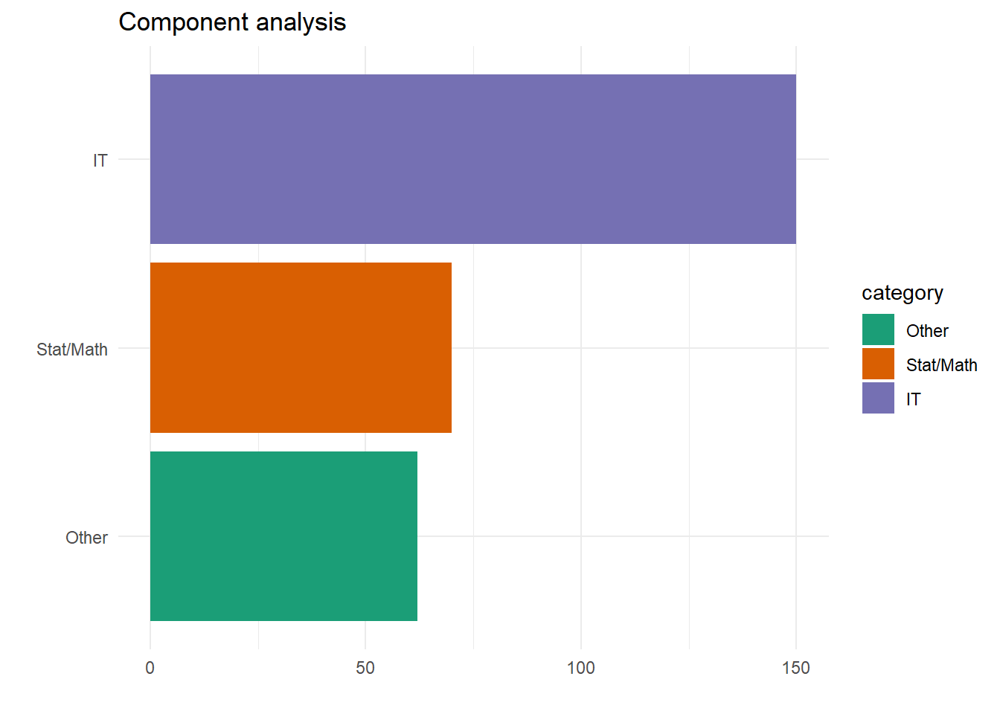
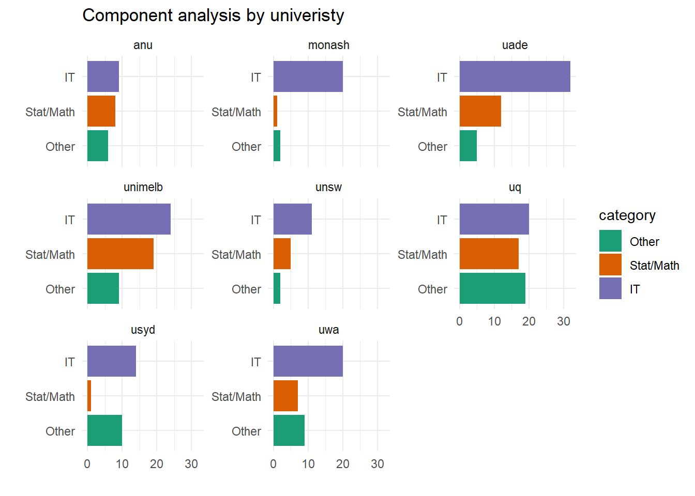

Analysis Summary - Go8
Text Analysis - Unit Overview

the most frequent word appeared ‘data science’ is removed
machine learning appears most often
involves basic math concepts such as linear regression
AI, neural network and software development

ANU is the only university contributes to linear regression
UADE is the only university contributes to artificial intelligence
UWA is the only university contributes to neural network
Text Analysis - Unit Learning Outcome

“real world” appears the most often, also has high appearances in overview
machine learning again appears more than 15 times, followed by statistical analysis
words relate to research get mentioned a lot

Monash and ANU contribute to the “research related” words
UWA and UQ mentioned statistical analysis relatively often
Component Analysis - Computational vs Statistical/Mathematical

Overall, majority of the units offered fall under IT department
Similar numbers observed from Stat/Math and other

Number of IT units are the highest across all GO8
More evenly distributed at ANU and UQ
IT/computational component takes the dominant position at Monash and UADE
Surprisingly low number of units in stat/math at USYD and Monash
To be Considered
Core and elective units are not separated
Programming languages used
Missing information